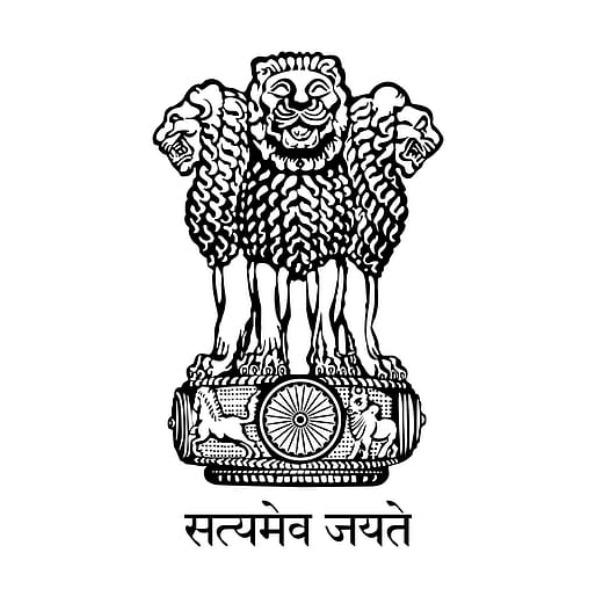

GO TO HOMEPAGE?
These Are Some Useful Resources To Understand About Cyber Securitys
Ministry of Electronics and Information Technology (MeitY) has identified Information/Cyber Security as a critical area. Information Security Education and Awareness (ISEA) project has been initiated looking at the growing importance for the Information Security, digital transformations.
StaySafeOnline is an initiative that aims to promote awareness about online safety and security. It provides resources and information on how to stay safe online, including tips for safe online shopping, online banking, and preventing identity theft.
Indian Cybercrime Coordination Centre (I4C) is an initiative of the Ministry of Home Affairs, Government of India to deal with cyber crime in the country in a coordinated and comprehensive manner.

The Ministry of Electronics and Information Technology (MeitY) is a department of the Government of India responsible for formulating policies, implementing programs, and promoting the growth of the electronics, IT, and ITeS industries in India.